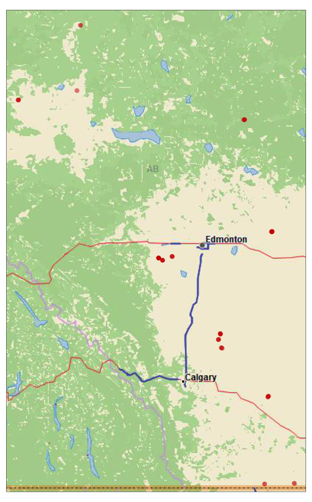

2.2 Combine ibutton data
Create spatial data frame of iButton locations
RIVR_xy<-RIVR%>%
dplyr::select(c(Project, Site_StationKey, Date_deplo, Lat, Long))%>%
dplyr::distinct()
RIVR_xy<-st_as_sf(RIVR_xy, coords=c("Long","Lat"), crs=4326)
# save as spatial data frame
save(RIVR_xy, file="0_data/manual/spatial/RIVR_xy.rData")
# save as shapefile
st_write(RIVR_xy, "0_data/manual/spatial/RIVR_xy.shp")
# buffer points
RIVR_xy_buff<-st_buffer(RIVR_xy, 100)
# save as spatial data frame
save(RIVR_xy_buff, file="0_data/manual/spatial/RIVR_xy_buf.rData")
# save as shapefile
st_write(RIVR_xy_buff, "0_data/manual/spatial/RIVR_xy_buf.shp")Identify study area
#create a bounding box around study area
bb<-st_bbox(RIVR_xy)
#Get aspect ratio of bounding box
bb<-st_as_sfc(bb)
bb<-st_as_sf(bb)
bb_buf<-st_buffer(bb, 10000)
bb_buf<-st_bbox(bb_buf)
bb_buf<-st_as_sfc(bb_buf)
bb_buf<-st_as_sf(bb_buf)
study_area<-bb_buf
# save as spatial data frame
save(study_area, file="0_data/manual/spatial/study_area.rData")
# save as shapefile
st_write(study_area, "0_data/manual/spatial/study_area.shp")# Plot
# get basemap
base<-basemap_raster(study_area, map_service = "esri", map_type = "delorme_world_base_map")
# get aspect ratio of the study area
asp <- (study_area$ymax - study_area$ymin)/(study_area$xmax - study_area$xmin)
# m<-tm_shape(alberta)+tm_borders()+tm_fill(col = "#fddadd")+
# #tm_polygons(col=NA, border.col="black")+
# tm_layout(frame=FALSE)+
# tm_legend(outside=TRUE, frame=FALSE)+
m<-tm_shape(base)+
tm_rgb()+
tm_shape(RIVR_xy)+
tm_symbols(col = "#D00D00", border.lwd = 0, size = .3, alpha=.3, title.shape="iButton locations", legend.format = list(text.align="right", text.to.columns = TRUE))
#tm_legend(position=c("left", "top"), frame=TRUE)
m
tmap_save(m, "3_output/maps/RIVR_xy.png")

Figure 2.1: iButton locations.